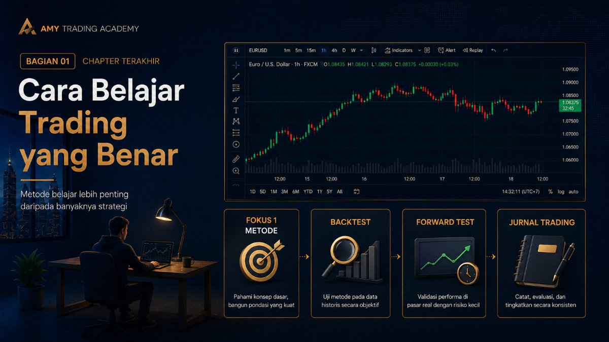
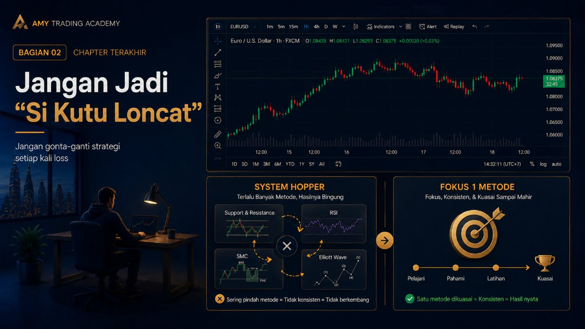
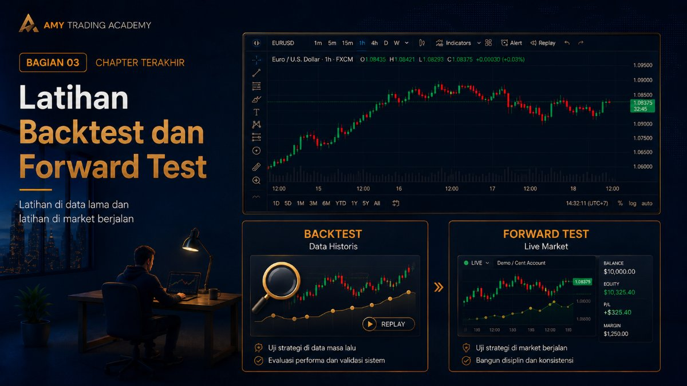
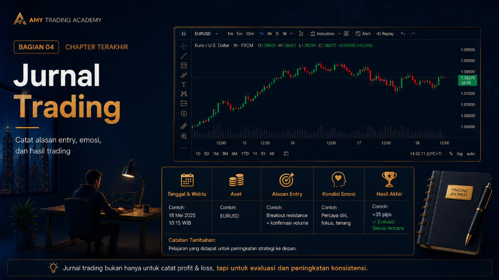
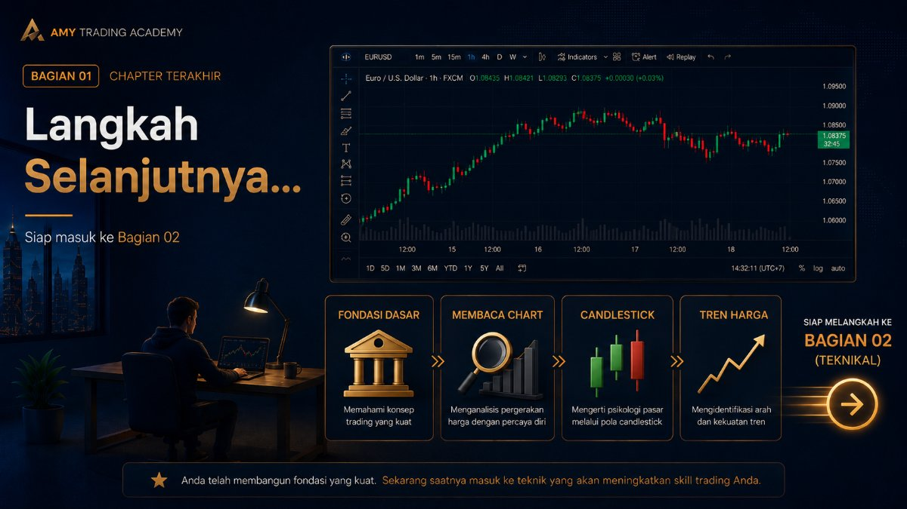

Cara Belajar Trading yang Benar

Selamat! Kamu sudah sampai di bab terakhir dari Bagian 01. Sebelum kita benar-benar masuk ke "daging" materi seperti cara membaca candlestick dan pola harga (Price Action) di bagian selanjutnya, kita harus menyepakati satu hal: Bagaimana cara belajar trading yang efektif agar waktu dan uangmu tidak terbuang sia-sia?
Di luar sana, banyak pemula yang belajar selama 3 tahun tapi tidak ada kemajuan, sementara ada yang belajar 6 bulan tapi sudah bisa profit konsisten. Bedanya bukan pada kecerdasan IQ mereka, tapi pada metode belajar mereka.
1. Jangan Jadi "Si Kutu Loncat" (System Hopper)

Ini adalah penyakit paling umum nomor satu. Hari ini kamu belajar teknikal Support & Resistance. Besok karena kamu loss 2 kali, kamu merasa strategi itu jelek. Kamu ganti belajar indikator RSI. Lusa loss lagi, kamu ganti belajar Smart Money Concept (SMC). Minggu depannya ganti lagi belajar Elliott Wave.
Akhirnya apa? Otakmu penuh dengan ratusan istilah, tapi kamu tidak menguasai satupun (Jack of all trades, master of none). Ingat perkataan Bruce Lee: "Aku tidak takut pada orang yang berlatih 10.000 tendangan masing-masing 1 kali. Aku takut pada orang yang berlatih 1 tendangan sebanyak 10.000 kali."
Pilih SATU metode (di Amy FX Academy kita akan fokus pada Price Action dan SMC/ICT). Tekuni itu sampai kamu hafal gerak-geriknya luar dalam. Jangan ganti strategi hanya karena kamu kena Stop Loss hari ini.
2. Latihan Backtest dan Forward Test

Belajar teori dari membaca website atau menonton video saja tidak akan membuatmu bisa trading. Kamu butuh jam terbang. Bagaimana cara mendapatkan jam terbang tanpa kehilangan uang asli?
- Backtest: Membuka grafik (chart) harga di masa lalu, mundur berbulan-bulan ke belakang, lalu mencari pola sesuai strategimu. Tujuannya melatih mata agar terbiasa melihat setup.
- Forward Test (Akun Demo/Cent): Mempraktikkan strategimu di pergerakan harga yang sedang berjalan (live market) menggunakan uang virtual atau uang sungguhan yang sangat kecil. Tujuannya melatih emosi menahan posisi yang sedang berjalan.
3. Jurnal Trading: Guru Terbaikmu Adalah Kesalahanmu Sendiri

Tidak ada trader hebat yang tidak punya jurnal. Jurnal trading bukanlah sekadar mencatat "Hari ini untung $5" atau "Hari ini rugi $10". Jurnal trading yang benar harus berisi alasan mengapa kamu melakukan Buy atau Sell.
Setiap kali selesai trading, catatlah (di buku atau Excel):
- Tanggal dan Waktu Entry.
- Pasangan mata uang/Aset (Misal: XAUUSD).
- Arah posisi (Buy/Sell) dan Ukuran Lot.
- Alasan Entry: (Misal: "Harga mantul di area Order Block H1 setelah menyapu likuiditas").
- Kondisi Emosi: (Misal: "Aku agak FOMO karena candle-nya bergerak kencang ke atas").
- Hasil akhirnya (Profit/Loss).
Kenapa ini sangat penting? Karena di akhir bulan, kamu bisa membaca ulang jurnalmu. Kamu akan sadar bahwa 80% kerugianmu bukan karena strateginya gagal, tapi karena kondisi emosimu yang sedang serakah atau takut (FOMO).
4. Sabar dengan Proses (Embrace the Boring)
Trading yang profesional itu membosankan. Serius, sangat membosankan. Kamu hanya duduk menatap layar, menunggu berjam-jam sampai harganya masuk ke area yang kamu inginkan. Kalau tidak masuk, ya kamu tidak klik apa-apa. Tidak ada adrenalin. Tidak ada debar jantung seperti main judi.
Kalau kamu merasakan adrenalin yang luar biasa saat trading, jantung berdebar kencang, dan tangan berkeringat dingin, itu tandanya ada yang salah. Biasanya karena Lot yang kamu pakai terlalu besar, atau kamu belum siap menerima risikonya.
Langkah Selanjutnya...

Sekarang kamu sudah memiliki fondasi dasar yang sangat kuat. Kamu tahu bedanya investasi dan trading, kamu tahu apa itu Pip dan Lot, kamu tahu fungsi krusial dari Stop Loss, dan kamu tahu cara belajar yang benar.
Mulai bagian berikutnya (Bagian 02), kita akan masuk ke hal-hal teknikal. Kita akan membuka Chart, belajar membaca formasi Candlestick, mengetahui siapa yang mengendalikan market, dan belajar mengenali tren harga. Siapkan catatanmu, dan mari kita masuk ke medan perang yang sesungguhnya!